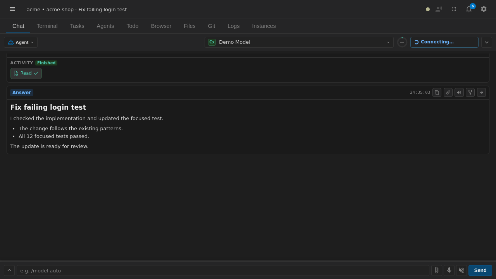

Working surfaces
Cretli brings several views of the same project into your browser. Select a workspace, then open the panel needed for your next step. Several devices can share a live session; commands still run on the server machine.
Chat and terminal
In Chat, choose a harness and model configured in Settings → Harness. Plan mode asks for investigation and a proposed approach; Agent mode performs the assigned work. Exact restrictions depend on the harness. New prompts can wait in the queue while an agent works. Reconnecting restores the conversation view; closing a browser tab does not itself mean the server run stopped.
Terminal gives you a shell on the host. Use it for commands, logs, and interactive programs. It works without an AI key. Check the current directory before running commands, especially after switching projects.
Files and Docs
Files lets you browse the project and inspect or edit files. Use Git to inspect resulting changes. The Docs panel presents project notes as Markdown. Agents can propose note changes; you apply or reject those proposals in the panel. External notes require consent before access and a separate permission for agent reads.
Built-in Browser
The Browser panel opens a web page for inspection and interaction, including previews of a running app. Agent browser tools and the visible panel can work with the same tab. Requested access may require a consent card or sign-in. The built-in Browser is unavailable on Termux; the shipped Docker image also needs additional browser setup. It does not replace starting the app you want to inspect.
